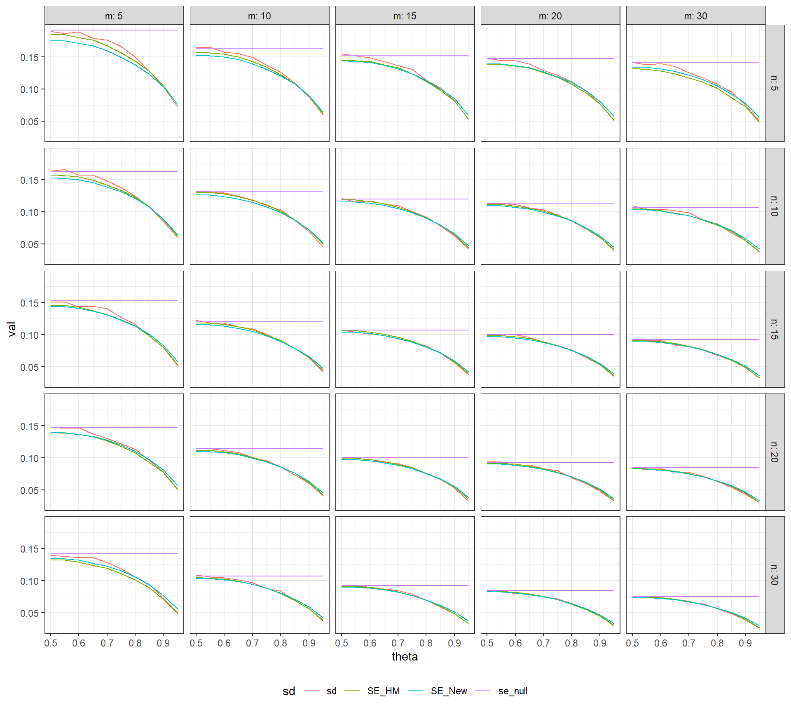
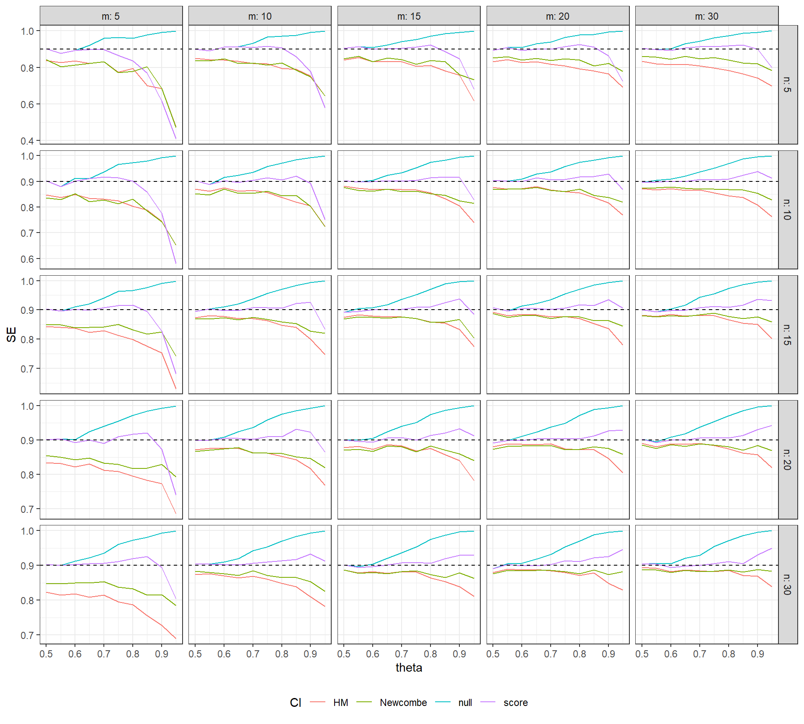

NAP <- function(yA, yB) {
m <- length(yA)
n <- length(yB)
U <- sum(sapply(yA, function(i) sapply(yB, function(j) (j > i) + 0.5 * (j == i))))
U / (m * n)
}Parker and Vannest (2009) proposed non-overlap of all pairs (NAP) as an effect size index for use in single-case research. NAP is defined in terms of all pair-wise comparisons between the data points in two different phases for a given case (i.e., a treatment phase versus a baseline phase). For an outcome that is desirable to increase, NAP is the proportion of all such pair-wise comparisons where the treatment phase observation exceeds the baseline phase observation, with pairs that are exactly tied getting a weight of 1/2. NAP belongs to the family of non-overlap measures, which also includes the percentage of non-overlapping data, the improvement rate difference, and several other indices. It is exactly equivalent to Vargha and Delaney’s (2000) modified Common Language Effect Size and has been proposed as an effect size index in other contexts too (e.g., Acion, Peterson, Temple, & Arndt, 2006).
The developers of NAP have created a web-based tool for calculating it (as well as several other non-overlap indices), and I have the impression that the tool is fairly widely used. For example, Roth, Gillis, and DiGennaro Reed (2014) and Whalon, Conroy, Martinez, and Welch (2015) both used NAP in their meta-analyses of single-case research, and both noted that they used singlecaseresearch.org for calculating the effect size measure. Given that the web tool is being used, it is worth scrutinizing the methods behind the calculations it reports. As of this writing, the standard error and confidence intervals reported along with the NAP statistic are incorrect, and should not be used. After introducing a bit of notation, I’ll explain why the existing methods are deficient. I’ll also suggest some methods for calculating standard errors and confidence intervals that are potentially more accurate.
Preliminaries
Suppose that we have data from the baseline phase and treatment phase for a single case. Let \(m\) denote the number of baseline observations and \(n\) denote the number of treatment phase observations. Let \(y^A_1,...,y^A_m\) denote the baseline phase data and \(y^B_1,...,y^B_n\) denote the treatment phase data. Then NAP is calculated as
\[ \text{NAP} = \frac{1}{m n} \sum_{i=1}^m \sum_{j=1}^n \left[I\left(y^B_j > y^A_i\right) + 0.5 I\left(y^B_j = y^A_i\right)\right] \]
What is NAP an estimate of? The parameter of interest is the probability that a randomly selected treatment phase observation will exceed a randomly selected baseline phase observation (again, with an adjustment for ties):
\[ \theta = \text{Pr}(Y^B > Y^A) + 0.5 \text{Pr}(Y^B = Y^A). \]
Vargha and Delaney call \(\theta\) the measure of stochastic superiority.
NAP is very closely related to another non-overlap index called Tau (Parker, Vannest, Davis, & Sauber, 2011). Tau is nothing more than a linear re-scaling of NAP to the range of [-1, 1]:
\[ \text{Tau} = \frac{S}{m n} = 2 \times \text{NAP} - 1, \]
where
\[ S = \sum_{i=1}^m \sum_{j=1}^n \left[I\left(y^B_j > y^A_i\right) - I\left(y^B_j < y^A_i\right)\right]. \]
The \(S\) is Kendall’s S statistic, which is closely related to the Mann-Whitney \(U\) test.
Here is an R function for calculating NAP:
Using the data from the worked example in Parker and Vannest (2009), the function result agrees with their reported NAP of 0.96:
yA <- c(4, 3, 4, 3, 4, 7, 5, 2, 3, 2)
yB <- c(5, 9, 7, 9, 7, 5, 9, 11, 11, 10, 9)
NAP(yA, yB)[1] 0.9636364Standard errors
The webtool at singlecaseresearch.org reports a standard error for NAP (it is labelled as “SDnap”), which from what I can tell is based on the formula
\[ \text{SE}_{\text{Tau}} = \sqrt{\frac{m + n + 1}{3 m n}}. \]
This formula appears to actually be the standard error for Tau, rather than for NAP. Since \(\text{NAP} = \left(\text{Tau} + 1\right) / 2\), the standard error for NAP should be half as large:
\[ \text{SE}_{null} = \sqrt{\frac{m + n + 1}{12 m n}} \]
(cf. Grissom & Kim, 2001, p. 141). However, even the latter formula is not always correct. It is valid only when the observations are all mutually independent and when the treatment phase data are drawn from the same distribution as the baseline phase data—that is, when the treatment has no effect on the outcome. I’ve therefore denoted it as \(\text{SE}_{null}\).
Other standard error estimators
Because an equivalent effect size measure is used in other contexts like clinical medicine, there has actually been a fair bit of research into better approaches for assessing the uncertainty in NAP. Hanley and McNeil (1982) proposed an estimator for the sampling variance of NAP that is designed for continuous outcome measures, where exact ties are impossible. Modifying it slightly (and in entirely ad hoc fashion) to account for ties, let
\[ \begin{aligned} Q_1 &= \frac{1}{m n^2}\sum_{i=1}^m \left[\sum_{j=1}^n I\left(y^B_j > y^A_i\right) + 0.5 I\left(y^B_j = y^A_i\right)\right]^2 \\ Q_2 &= \frac{1}{m^2 n}\sum_{j=1}^n \left[\sum_{i=1}^m I\left(y^B_j > y^A_i\right) + 0.5 I\left(y^B_j = y^A_i\right)\right]^2. \end{aligned} \]
Then the Hanley-McNeil variance estimator is
\[ V_{HM} = \frac{1}{mn} \left[\text{NAP}\left(1 - \text{NAP}\right) + (n - 1)\left(Q_1 - \text{NAP}^2\right) + (m - 1)\left(Q_2 - \text{NAP}^2\right)\right], \]
with \(\text{SE}_{HM} = \sqrt{V_{HM}}\).
The same authors also propose a different estimator, which is based on the assumption that the outcome data are exponentially distributed. Even though this is a strong and often inappropriate assumption, there is evidence that this estimator works even for other, non-exponential distributions. Newcombe (2006) suggested a further modification of their estimator, and I’ll describe his version. Let \(h = (m + n) / 2 - 1\). Then
\[ V_{New} = \frac{h}{mn} \text{NAP}\left(1 - \text{NAP}\right)\left[\frac{1}{h} + \frac{1 - \text{NAP}}{2 - \text{NAP}} + \frac{\text{NAP}}{1 + \text{NAP}}\right], \]
with \(\text{SE}_{New} = \sqrt{V_{New}}\).
Here are R functions to calculate each of these variance estimators.
V_HM <- function(yA, yB) {
m <- length(yA)
n <- length(yB)
U <- sapply(yB, function(j) (j > yA) + 0.5 * (j == yA))
t <- sum(U) / (m * n)
Q1 <- sum(rowSums(U)^2) / (m * n^2)
Q2 <- sum(colSums(U)^2) / (m^2 * n)
(t * (1 - t) + (n - 1) * (Q1 - t^2) + (m - 1) * (Q2 - t^2)) / (m * n)
}
V_New <- function(yA, yB) {
m <- length(yA)
n <- length(yB)
t <- NAP(yA, yB)
h <- (m + n) / 2 - 1
t * (1 - t) * (1 + h * (1 - t) / (2 - t) + h * t / (1 + t)) / (m * n)
}
sqrt(V_HM(yA, yB))[1] 0.03483351sqrt(V_New(yA, yB))[1] 0.04370206For the worked example dataset from Parker and Vannest, the Newcombe estimator yields a standard error that is about 25% larger than the Hanley-McNeil estimator. Both of these are substantially smaller than the null standard error, which in this example is \(\text{SE}_{null} = 0.129\).
A small simulation
Simulation methods can be used to examine how well these various standard error formulas estimate the actual sampling variation of NAP. For simplicity, I’ll simulate normally distributed data where
\[ Y^A \sim N(0, 1) \qquad \text{and} \qquad Y^B \sim N\left(\sqrt{2}\Phi^{-1}(\theta), 1\right) \]
for varying values of the effect size estimand (\(\theta\)) and a couple of different sample sizes.
sample_NAP <- function(delta, m, n, iterations) {
NAPs <- replicate(iterations, {
yA <- rnorm(m)
yB <- rnorm(n, mean = delta)
c(NAP = NAP(yA, yB), V_HM = V_HM(yA, yB), V_New = V_New(yA, yB))
})
data.frame(sd = sd(NAPs["NAP",]),
SE_HM = sqrt(mean(NAPs["V_HM",])),
SE_New = sqrt(mean(NAPs["V_New",])))
}
library(dplyr)
library(tidyr)
theta <- seq(0.5, 0.95, 0.05)
m <- c(5, 10, 15, 20, 30)
n <- c(5, 10, 15, 20, 30)
expand.grid(theta = theta, m = m, n = n) %>%
group_by(theta, m, n) %>%
mutate(delta = sqrt(2) * qnorm(theta)) ->
params
params %>%
do(sample_NAP(.$delta, .$m, .$n, iterations = 2000)) %>%
mutate(se_null = sqrt((m + n + 1) / (12 * m * n))) %>%
gather("sd","val", sd, SE_HM, SE_New, se_null) ->
NAP_simlibrary(ggplot2)
ggplot(NAP_sim, aes(theta, val, color = sd)) +
facet_grid(n ~ m, labeller = "label_both") +
geom_line() +
theme_bw() + theme(legend.position = "bottom")
In the above figure, the actual sampling standard deviation of NAP (in red) and the value of \(\text{SE}_{null}\) (in purple) are plotted against the true value of \(\theta\), with separate plots for various combinations of \(m\) and \(n\). The expected value of the standard errors \(\text{SE}_{HM}\) and \(\text{SE}_{New}\) (actually the square root of the expectation of the variance estimators) are depicted in green and blue, respectively. The value of \(\text{SE}_{null}\) agrees with the actual standard error when \(\delta = 0\), but the two diverge when there is a positive treatment effect. It appears that \(\text{SE}_{HM}\) and \(\text{SE}_{New}\) both under-estimate the actual standard error when \(m\) or \(n\) is equal to 5, and over-estimate for the largest values of \(\theta\). However, both of these estimators offer a marked improvement over \(\text{SE}_{null}\).
Confidence intervals
The webtool at singlecaseresearch.org also reports 85% and 90% confidence intervals for NAP. These confidence intervals appear to have the same two problems as the standard errors. First, they are constructed as CIs for Tau rather than for NAP. For the \(100\% \times (1 - \alpha)\) CI, let \(z_{\alpha / 2}\) be the appropriate critical value from a standard normal distribution. The CIs reported by the webtool are given by
\[ \text{Tau} \pm \text{SE}_{\text{Tau}} \times z_{\alpha / 2}. \]
This is probably just an oversight in the programming, which could be corrected by instead using
\[ \text{NAP} \pm \text{SE}_{null} \times z_{\alpha / 2}. \]
In parallel with the standard error formulas, I’ll call this formula the null confidence interval. Funnily enough, the upper bound of the null CI is the same as the upper bound of the Tau CI. However, the lower bound is going to be quite a bit larger than the lower bound for the Tau CI, so that the null CI will be much narrower.
The second problem is that even the null CI has poor coverage properties because it is based on \(\text{SE}_{null}\), which can drastically over-estimate the standard error of NAP for non-null values.
Other confidence intervals
As I noted above, there has been a fair amount of previous research into how to construct CIs for \(\theta\), the parameter estimated by NAP. As is often the case with these sorts of problems, there are many different methods available, scattered across the literature. Fortunately, there are two (at least) fairly comprehensive simulation studies that compare the performance of various methods under a wide range of conditions. Newcombe (2006) examined a range of methods based on inverting Wald-type test statistics (which give CIs of the form \(\text{estimate} \pm \text{SE} \times z_{\alpha / 2}\), where \(\text{SE}\) is some standard error estimate) and score-based methods (in which the standard error is estimated using the candidate parameter value). Based on an extensive simulation, he suggested a score-based method in which the end-points of the CI are defined the values of \(\theta\) that satisfy:
\[ (\text{NAP} - \theta)^2 = \frac{z^2_{\alpha / 2} h \theta (1 - \theta)}{mn}\left[\frac{1}{h} + \frac{1 - \theta}{2 - \theta} + \frac{\theta}{1 + \theta}\right], \]
where \(h = (m + n) / 2 - 1\). This equation is a fourth-degree polynomial in \(\theta\), easily solved using a numerical root-finding algorithm.
In a different simulation study, Ruscio and Mullen (2012) examined the performance of a selection of different confidence intervals for \(\theta\), including several methods not considered by Newcombe. Among the methods that they examined, they find that the bias-corrected, accelerated (BCa) bootstrap CI performs particularly well (and seems to outperform the score-based CI recommended by Newcombe).
Neither Newcombe (2006) nor Ruscio and Mullen (2012) considered constructing a confidence interval by directly pivoting the Mann-Whitney U test (the same technique used to construct confidence intervals for the Hodges-Lehmann estimator of location shift), although it seems to me that this would be possible and potentially an attractive approach in the context of SCDs. The main caveat is that such a CI would require stronger distributional assumptions than those studied in the simulations, such as that the distributions of \(Y^A\) and \(Y^B\) differ by an additive (or multiplicative) constant. In any case, it seems like it would be worth exploring this approach too.
Another small simulation
Here is an R function for calculating several different CIs for \(\theta\), including the null CI, Wald-type CIs based on \(V_{HM}\) and \(V_{New}\), and the score-type CI recommended by Newcombe (2006). I haven’t programmed the BCa bootstrap because it would take a bit more thought to figure out how to simulate it efficiently.
The following code simulates the coverage rates of nominal 90% CIs based on each of these methods, following the same simulation set-up as above.
NAP_CIs <- function(yA, yB, alpha = .05) {
m <- length(yA)
n <- length(yB)
U <- sapply(yB, function(j) (j > yA) + 0.5 * (j == yA))
t <- sum(U) / (m * n)
# variance estimators
V_null <- (m + n + 1) / (12 * m * n)
Q1 <- sum(rowSums(U)^2) / (m * n^2)
Q2 <- sum(colSums(U)^2) / (m^2 * n)
V_HM <- (t * (1 - t) + (n - 1) * (Q1 - t^2) + (m - 1) * (Q2 - t^2)) / (m * n)
h <- (m + n) / 2 - 1
V_New <- t * (1 - t) * (1 + h * (1 - t) / (2 - t) + h * t / (1 + t)) / (m * n)
# Wald-type confidence intervals
z <- qnorm(1 - alpha / 2)
SEs <- sqrt(c(null = V_null, HM = V_HM, Newcombe = V_New))
Wald_lower <- t - z * SEs
Wald_upper <- t + z * SEs
# score-type confidence interval
f <- function(x) m * n * (t - x)^2 * (2 - x) * (1 + x) -
z^2 * x * (1 - x) * (2 + h + (1 + 2 * h) * x * (1 - x))
score_lower <- if (t > 0) uniroot(f, c(0, t))$root else 0
score_upper <- if (t < 1) uniroot(f, c(t, 1))$root else 1
list(NAP = t,
CI = data.frame(lower = c(Wald_lower, score = score_lower),
upper = c(Wald_upper, score = score_upper)))
}
NAP_CIs(yA, yB)$NAP
[1] 0.9636364
$CI
lower upper
null 0.7106061 1.2166666
HM 0.8953639 1.0319088
Newcombe 0.8779819 1.0492908
score 0.7499741 0.9950729sample_CIs <- function(delta, m, n, alpha = .05, iterations) {
NAPs <- replicate(iterations, {
yA <- rnorm(m)
yB <- rnorm(n, mean = delta)
NAP_CIs(yA, yB, alpha = alpha)
}, simplify = FALSE)
theta <- mean(sapply(NAPs, function(x) x$NAP))
coverage <- rowMeans(sapply(NAPs, function(x) (x$CI$lower < theta) & (theta < x$CI$upper)))
data.frame(CI = rownames(NAPs[[1]]$CI), coverage = coverage)
}
params %>%
do(sample_CIs(delta = .$delta, m = .$m, n = .$n, alpha = .10, iterations = 5000)) ->
NAP_CI_simggplot(NAP_CI_sim, aes(theta, coverage, color = CI)) +
facet_grid(n ~ m, labeller = "label_both", scales = "free_y") +
geom_line() +
labs(y = "SE") +
geom_hline(yintercept=.90, linetype="dashed") +
theme_bw() + theme(legend.position = "bottom")
The figure above plots the coverage rates of several different confidence intervals for \(\theta\): the naive CI (in blue), the HM Wald CI (red), the Newcombe Wald CI (green), and the Newcombe score CI (purple). The dashed horizontal line is the nominal coverage rate of 90%. It can be seen that the null CI has the correct coverage only when \(\theta \leq .6\); for larger values of \(\theta\), its coverage becomes too conservative (tending towards 100%). The Wald-type CIs have below-nominal coverage rates, which improve as the sample size in each phase increases but remain too liberal even at the largest sample size considered. Finally, Newcombe’s score CI maintains close-to-nominal coverage over a wider range of \(\theta\) values. Although these CIs have below-nominal coverage for the smallest sample sizes, they generally have good coverage for \(\theta < .9\) and when the sample size in each phase is 10 or more. It is also notable that their coverage rates appear to become more accurate as the sample size in a given group increases, even if the sample size in the other group is fairly small and remains constant.
Caveats
My aim in this post was to highlight the problems with how singlecaseresearch.org calculates standard errors and CIs for the NAP statistic. Some of these issues could easily be resolved by correcting the relevant formulas so that they are appropriate for NAP rather than Tau. However, even with these corrections, better approaches exist for calculating standard errors and CIs. I’ve highlighted some promising ones above, which seem worthy of further investigation. But I should also emphasize that these methods do come with some important caveats too.
First, all of the methods I’ve discussed are premised on having mutually independent observations. In the presence of serial correlation, I would anticipate that any of these standard errors will be too small and any of the confidence intervals will be too narrow. (This could readily be verified through simulation, although I have not done so here.)
Second, my small simulations are based on the assumption of normally distributed, homoskedastic observations in each phase, which is not a particularly good model for the types of outcome measures commonly used in single case research. In some of my other work, I’ve developed statistical models for data collected by systematic direct observation of behavior, which is the most prevalent type of outcome data in single-case research. Before recommending any particular method, the performance of the standard error formulas (e.g., the Hanley-McNeil and Newcombe estimators) and CI methods (such as Newcombe’s score CI) should be examined under more realistic models for behavioral observation data.